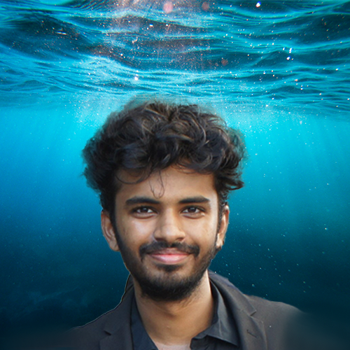

about

I am a Master's student in Computer Science at the University of Copenhagen, specializing in Information Retrieval and Natural Language Processing, where I am advised by Prof. Maria Maistro and Prof. Christina Lioma. I previously completed my undergraduate at VIT Chennai.
My research is centered around the retrieval and generative capabilites of models particularly focusing on its shortcomings and efficiency. I am currently interning at LightOn, where I work on code search tools.
Over the years, I have had the opportunity to collaborate with wonderful mentors across several labs. I previously worked on hallucinations in Text2Video models with Prof. Amitava Das at the AI Institute, UofSC, and on efficient dense retrievers with Prof. Nirav Bhatt at WSAI-IIT Madras. Most recently, at the Stanford STAIR Lab, I worked with Rylan Schaeffer and Prof. Sanmi Koyejo on model collapse.